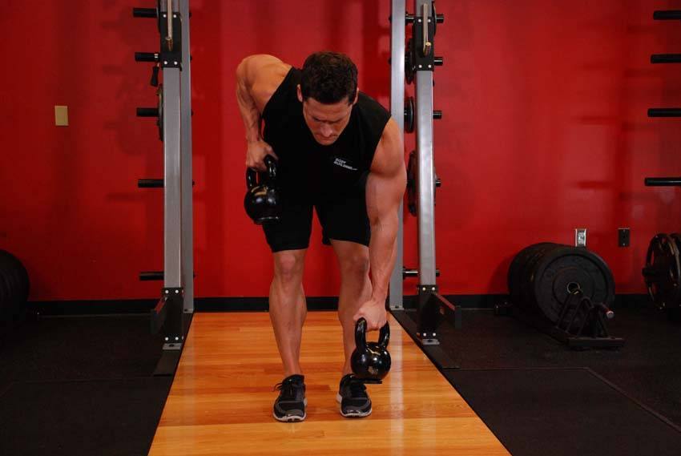

- Place two kettlebells in front of your feet. Bend your knees slightly and push your butt out as much as possible. As you bend over to get into the starting position grab both kettlebells by the handles.
- Pull one kettlebell off of the floor while holding on to the other kettlebell. Retract the shoulder blade of the working side, as you flex the elbow, drawing the kettlebell towards your stomach or rib cage.
- Lower the kettlebell in the working arm and repeat with your other arm.
This exercise appears in Programmd training programs. Take the quiz to find one for your gym.
Find your program